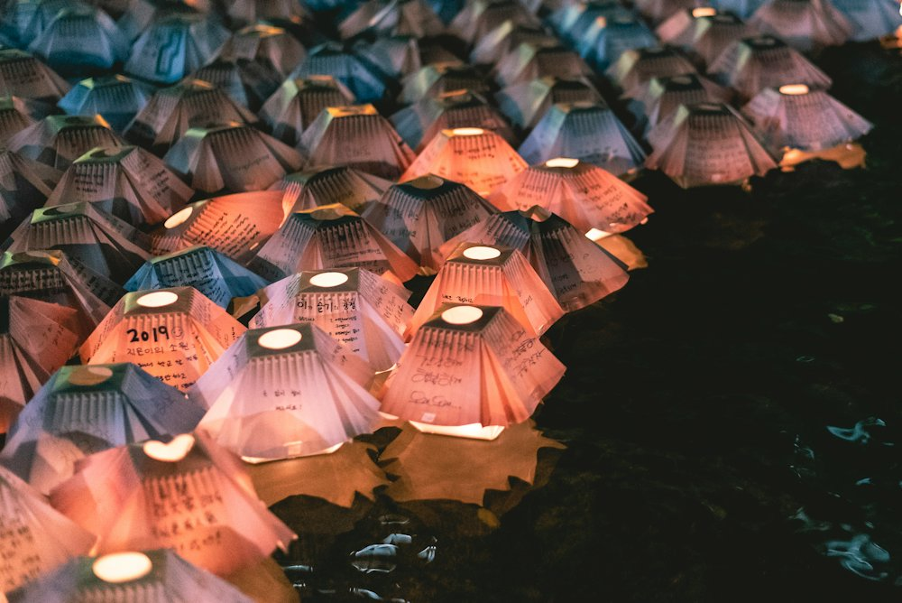

祭典官方已公布亚洲
晋州南江流灯节
Jinju Namgang Yudeung · 韩国 · 晋州
最佳时间
10 月上旬（约 10 天）
每年 10 月于南江举行，水面灯组与灯光秀。
南江上漂浮着成片大型灯组，夜里灯影倒映水面，是韩国代表性灯节。
不能错过
- 南江水面的大型主题灯组
- 城墙与桥上的灯光投影
旅人提醒
- 夜间人潮多，沿江分段观赏
- 10 月昼夜温差大，带外套
月度热力与气温
7°
1
10°
2
15°
3
21°
4
26°
5
29°
6
31°
7
32°
8
27°
9
21°
10
15°
11
8°
12
适宜度（柱高，5=最佳）依据活动窗口与气候整理；气温为月均高温近似值（°C），仅供规划参考，出行前请查当地预报。
编辑核实笔记 · 会期以官方公告为准；配图为示意。
预订 / 官网
官方页面：查看官网 / 官方信息 ↗ · 票价与预约以官网为准
联盟链接含占位 tracking id（Booking/Klook/GetYourGuide），上线替换为真实 ID 即生效；均带 utm 参数与点击统计。